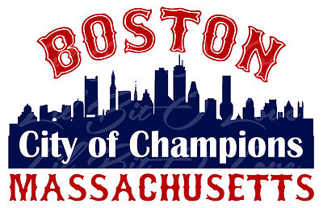

Step Inside the Boston Sports Hall of Fame!
Boston isn't known as "The City of Champions" for no reason. Across the four major American professional sports leagues (NFL, NBA, MLB, and NHL), Boston has won a staggering 39 championships. Sports are the lifeblood of the city — Bostonians live and die by our teams. Let's honor some of our greatest players and their achievements in this website.
Four Teams, One City
Explore the stories of the Red Sox, Bruins, Celtics, and Patriots — each a symbol of passion, resilience, and championship culture.
Meet the TeamsThe Criteria & Your Invitation
What makes a Hall of Famer? Some say it's championships, others say statistical achievement, some say character. For us, it's a combination of all those things that any given player must excel at for entry:
- 1. What team accomplishments did the player help achieve? (e.g., strong win-loss record or championships)
- 2. What individual accomplishments did the player earn? (e.g., MVP awards)
- 3. How did the player impact the city of Boston?
- 4. Was the player a sportsman and model of leadership?
- 5. Did the player change or influence the way their sport was played?
You are now cordially invited. Visit below.
View the Hall of Famers